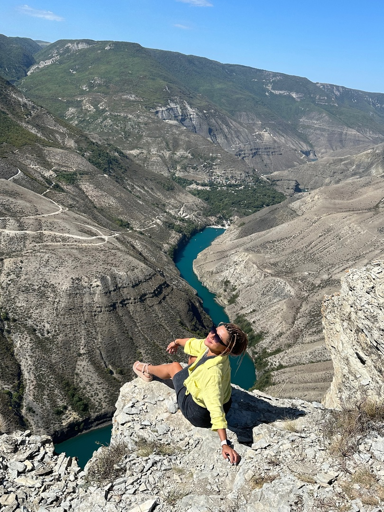
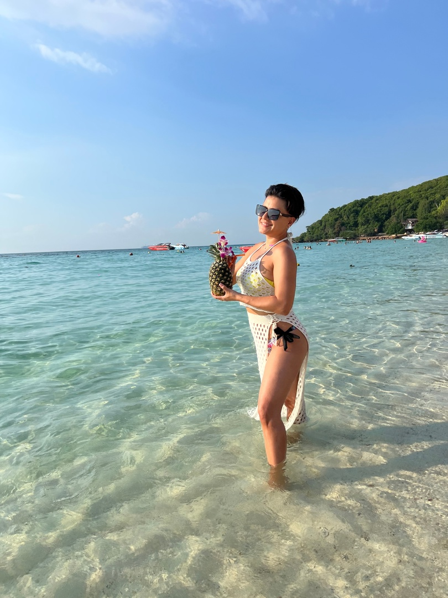

Визажист из Саратова за несколько лет с 0 выросла до ТОПа в своём городе. Нашла себя. Зарабатывает достаточно, чтобы ловить кайф от жизни. Пишет свою книгу, успела выучиться на тренера йоги. Много путешествует.
Сколько тратит на рекламу? Как часто пишет посты? Сложно ли было научиться продвижению?
Это небольшое интервью с нашей ученицей Юлией Бойцовой.
— Расскажи, что было до курса, какой средний доход был в месяц? Сколько клиентов?
— До курса 0)) я ж только начинала, поэтому была полный профан))) что в своем деле, что в рекламе
— Какие сложности были во время обучения на курсе? На сколько сложно было учиться? За сколько прошла обучение?
— Только мои тараканы и психологические барьеры, которые не позволяли поверить в себя.
Могу сказать вот что, с тобой, Евгения, я перестала себя стесняться и показывать в социальных сетях. Барьер между мной и аккаунтом рухнул окончательно после курса по написанию постов. И сейчас я пишу книгу))
Именно с тобой и твоей командой я эти барьеры преодолела.
Обстановка была очень тёплая и дружественная, до сих пор общаемся и даже встретиться удалось с кем-то)
Вообще это моё развитие в целом, но начало было именно у вас, поддержка единомышленников очень важна, и она была одним из самых ценных моментов, после тех знаний, что давались на курсе.
Потом курс по постам сломал все барьеры между мной и белым листом ))
Я теперь не заморачиваюсь вообще))
— Ты проходила курс "ВК-Бабло" с куратором. Расскажи каково было работать с куратором, что было полезно, мотивировало ли это тебя? Как считаешь, без куратора получилось бы так же?
—Не могу сказать лучше без куратора или нет, но с куратором однозначно хорошо, она везде подсказывает, поддерживает и объясняет, если ты тупишь откровенно.
— Какие сейчас действия делаешь для привлечения клиентов? Как часто пишешь посты? Запускаешь ли рекламу?
— Неа )) рекламу не запускаю, сами идут, профиль говорящий, кто ищет, тот находит.
Смотри, в целом если говорить о доходах, то можно сказать из никого в высшую лигу)))
На данный момент я ТОП в своём городе).
Меня знают, ко мне хотят, а группа уже молча сама работает, мне даже лень там переделывать что-то, хотя давно пора."
— Ну, а посты пишешь? часто? пишешь потому что надо или потому что хочется?
— Нет, сейчас я пишу, когда «душа просит».
Я так с аудиторией общаюсь, причём, эти посты не всегда о пользе макияжей или привлечению клиентов.
Захотела написала… люди «бдят»))
Если говорить о полезных и привлекающих клиентов посты, то только в случае необходимости, допустим проект какой-то запускаю, тогда да, 2-3 поста по теме могу накатать.
— А можешь поделиться, как изменилась жизнь, когда увеличился доход? Может что-то купила себе? Съездила в путешествие? Что-то смогла сделать, чего раньше не могла позволить себе?)
— Тэк))) жизнь изменилась кардинально ))
Я постоянно куда-то езжу, в этом году 5 раз была где-то. Гоа, Домбай, Дагестан, Турция.

По деньгам у меня меньше, чем когда я работала в найме, но по возможностям…. В сотни раз больше, поэтому я прямое доказательство, что не в деньгах счастье.
Каждый раз когда мне нужны деньги, они ко мне приходят в том объеме, который необходим, поэтому я не загоняюсь по количеству денег.
Для меня ценно было ощущение себя найти и это есть сейчас.
Легко без загонов и с радостью))
Наверное, это самое шикарное, что может быть, я реально не считаю. Да, если раньше было ноль, то сейчас у меня так: что-то денег не хватает, там на что-то и знаешь, глазами моргнул и клиенты посыпались. Если человек деньги не считает, неважно много или мало. У меня хватает. Я кайфую. Вот этого я стою.
Зарабатываю достаточно, чтобы кайф от жизни ловить))))
— Круто! Какие планы есть на дальнейшее развитие?
— Да в планах есть открыть агентство, но пока книга на первом месте, издамся и начну думать)
Хочу бестселлер родить) Сейчас основной смысл выложу и займусь поисками редактора, издателя и прочего нужного для этих целей.
Это автобиография, она как проработка себя, очень хорошо помогает понять кто ты и что.
Мы часто живем и не осознаем кто мы и что делаем, цепляемся за прошлое, либо грезим будущим. А про то, что жить нужно здесь и сейчас, просто не понимаем. «Шоры социума»
— Сколько сейчас зарабатываешь? Сколько в среднем в месяц? Сколько клиентов? А вот примерно сколько за год было прошедший заработано? Учитывая что это рост с 0?
— Такс) по цифрам:
Средний чек вырос с 700₽ до 2500₽
Принципиально не работаю больше трех-четырех дней в неделю (именно бьюти), могу себе позволить), в другие дни я тренер)) если выдаются горячие дни в бьюти сфере, больше двух недель подряд, то потом минимум неделя отпуска.
Исходя из таких расчётов, мой час стоит в среднем минимуме 2000
Соответственно, если я работаю по 5 часов в день, три раза в неделю это 30000₽ в неделю, в месяц 120. Как-то так), и всё это на лайтеее, без напрягов и перегрузок.
Надо будет больше денег, увеличиваю количество клиентов через призыв в сторис)
Все деньги спускаю на путешествия.

Ну и на разные там развлечения.
Это средние цифры плюс-минус.
Так ещё меня благодаря соцсетям, стали приглашать в качестве модели для рекламы, там тож чет капает, рубль какой-то))
В общем с вами моя жизнь кардинально изменилась в лучшую сторону) потому что я получаю бабки, кайфуя, с легкостью и радостью))
Из такого Мега офисного босса и далеко не публичного, в почти медийную личность.
А … можно добавить что у меня количество подписчиков с 40 до 630 выросли)) и штук 300 уже просто на органике.
(посчитала деньги)
— Мляяя, я богат! Ну, получается по средним подсчетам начинали мы с 214 тыс первый год на лайте и минимальных ценах, а потом пришли к плюс минус 1,4 ляма … хз как посчитала, сначала не поверила, потом прикинула сколько я ток за этот год слила на путешествия и как-то очень похоже на правду.
Шеффф, где деньги?! Кароч… хочешь понять на сколько ты богат, сядь и посчитай.
Суммарно за два года, получается больше, там 2,5 млн наверное, если взять всё вместе с проектами учениками и прочими радостями.
Такая история! Чтобы кайфовать от жизни и заниматься любимым делом достаточно лишь освоить простой маркетинг в VK от Евгении Брун.
Для этого в курсе есть все инструменты:
- Курс ВК-Бабло, чтобы наладить стабильные продажи из VK
- Закрытый клуб "Ремесленник при бабках" с единомышленниками, чтобы быть на волне мотивации. Место где всегда поддержат, дадут обратную связь. Доп уроки про тайм-менджмент, финансовую грамотность, психология, нюансы законов, и мягкие подпинывания, чтобы продолжать движение!